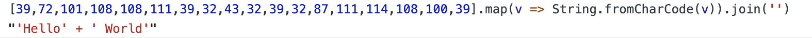

上篇简单介绍了入口方法的流程以及scanner类相关的部分内容，这一篇主要讲scanner的初始化，即
scanner_.Initialize();注意，这不是调用静态方法。实际上Parser实例生成的时候也把scanner属性初始化了，所以这里可以直接用。
Parser::Parser(ParseInfo* info) : ParserBase<Parser>(/* 初始化父类的属性 */)
scanner_(info->character_stream(), info->is_module()),/* 初始化其他属性 */实际上，就是初始化了scanner上的source_属性与模块的flag，以便调用Initialize方法。
这个方法有点类似于libuv的异步操作，不过当然完全不是一个东西，源码如下。
/**
* 注意 这里不做AST的全面转换
*/
void Scanner::Initialize() {
Init();
next().after_line_terminator = true;
Scan();
}第二步我也不晓得是干啥的，暂时不理解那个变量的意义，所以只讲第一和第三步，首先是Init。
void Init() {
Advance();
/**
* TokenDesc token_storage_[3];
* 这里做一个映射 相当于alias
*/
current_ = &token_storage_[0];
next_ = &token_storage_[1];
next_next_ = &token_storage_[2];
found_html_comment_ = false;
scanner_error_ = MessageTemplate::kNone;
}
/**
* source_在Parser的构造函数中初始化
* 类型为Utf16CharacterStream 需要去那边看实现
*/
void Advance() {
c0_ = source_->Advance();
}从scanner层级来看，其Advance方法的作用仅仅是对私有属性c0_(当前字符的Unicode编码)进行赋值，做实际操作是source_属性上的Advance方法，而这个属性类型为前面转换后的Stream类(全称是xxxCharacterStream，因为太长了，后面全部简称Stream类)，所以具体实现需要跳到那边去，源码如下。
/**
* 从这里开始方法域跳到了Utf16CharacterStream、BufferedCharacterStreams
* 即Utf16CharacterStream::Advance、Utf16CharacterStream::Peek、Utf16CharacterStream::ReadBlockChecked
*/
inline uc32 Advance() {
uc32 result = Peek();
buffer_cursor_++;
return result;
}
/**
* 返回游标所在位置的值
* 1、已初始化
* 2、未初始化
* 3、已到结尾
*/
inline uc32 Peek() {
if (V8_LIKELY(buffer_cursor_ < buffer_end_)) {
return static_cast<uc32>(*buffer_cursor_);
} else if (ReadBlockChecked()) {
return static_cast<uc32>(*buffer_cursor_);
} else {
return kEndOfInput;
}
}这里有一些东西需要解释，首先是关于Stream类的3个游标属性(这个名字是我自己取的，看AST的解析总让我想到高中的游标卡尺)，分别是buffer_start_、buffer_cursor_、buffer_end_，分别代表字符解析中的开始、当前、结束位置，在Stream类初始化时这三个属性没有处理，默认置0。注意，这里的属性指向字符，跟词法是不同的概念，在scanner层级的三个属性是词法。比如说if从词法角度讲是一个，但是从字符角度来说是两个。
下面的3个判断注释中给出了意义，比较有意思的是V8_LIKELY宏，对于开发者来说算是一个无意义的宏，但是这个宏是给编译器看的，表明这个分支比较有可能发生，推荐进行优化。由于初始化只会走一遍，在解析未结束前大部分情况都是走第一个分支直接返回当前游标指向的值。不过目前是第一次调用这个方法，我们走第二个分支。
/**
* 这里是做一个合法性检测
* 实际上只有ReadBlock做事
*/
bool ReadBlockChecked() {
size_t position = pos();
USE(position);
bool success = !has_parser_error() && ReadBlock();
// Post-conditions: 1, We should always be at the right position.
// 2, Cursor should be inside the buffer.
// 3, We should have more characters available iff success.
DCHECK_EQ(pos(), position);
DCHECK_LE(buffer_cursor_, buffer_end_);
DCHECK_LE(buffer_start_, buffer_cursor_);
DCHECK_EQ(success, buffer_cursor_ < buffer_end_);
return success;
}
/**
* buffer_pos_代表当前进度位置 类型为整形
* cursor、start作为指针指向buffer_数组的当前、初始地址
* 而数组在内存中地址连续 且unsigned short类型占1
* 所以可以直接通过计算得到当前位置
*/
inline size_t pos() const {
return buffer_pos_ + (buffer_cursor_ - buffer_start_);
}
/**
* 1、buffer_是一个unsigned short数组 存储编码处理后的单个字符
* 2、指针start、end分别初始化为数组的头尾
* 3、cursor是游标 初始指向start
* 例如"(function)"在buffer_表示为[40, 102, ...]
*/
bool ReadBlock() final {
size_t position = pos();
buffer_pos_ = position;
buffer_start_ = &buffer_[0];
buffer_cursor_ = buffer_start_;
DisallowHeapAllocation no_gc;
Range<uint8_t> range = byte_stream_.GetDataAt(position, runtime_call_stats(), &no_gc);
if (range.length() == 0) {
buffer_end_ = buffer_start_;
return false;
}
size_t length = Min(kBufferSize, range.length());
i::CopyCharsUnsigned(buffer_, range.start, length);
buffer_end_ = &buffer_[length];
return true;
}这一块的内容较多，实际上说多也不多。第一个方法只是纯粹的检查，保证游标属性的合法，pos方法则是直接通过地址计算来得到当前解析位置，原理写在注释里了。
ReadBlock方法负责对Stream属性的初始化，这个类前面没有给出声明，buffer_是其一个私有属性，长度为512的short数组。DisallowHeapAllocation不要去管，v8里面有很多奇奇怪怪的东西，目前理解不了，当然与AST本身也毫无关系。GetDataAt比较麻烦，不想讲，从结果上来讲，最后返回的是字符串每个字符的Unicode编码，通过CopyCharsUnsigned方法复制到了buffer_上面，并将buffer_end_指向了最后结尾的部分。
比如说待编译字符串为"'Hello' + ' World'"，经过GetDataAt处理后，会变成39, 72, ...。
这里给一个调试结果，buffer_初始化后，会有一堆脏数据，内容如下(长度512，只截取了前面一部分)。
经过该方法的一系列处理，变成了
加上空格，整个字符串共有18位，所以0-17的值全部被重置，后面还是老的脏数据。这些数字手动转换一下，可以得到

刚好是待编译的字符串（先假设字符串长度小于512，复杂情况后面再搞）。
至此，整个Init方法才完事，没想到这么长，Scan下一篇讲，要干活了。